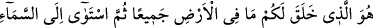
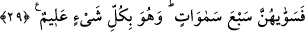
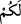

Hesap için Allah’a dönüş, dirilmenin hemen peşisıra vuku bulacak, aralarında pek fazla
gecikme olmayacaktır. Bu sebeble “Sonra O’na döndürüleceksiniz.” ifâdesi, kıyâmet
günü olacak diriltme mânâsında değildir.
et-Teysîr isimli eserde belirtildiğine göre bu âyet-i celîle kabir azâbının ve kabir
râhatının varlığına delâlet etmektedir.
“Sonra O’na döndürüleceksiniz.” Bu dönüş haşirden sonra olacaktır. Başkasına
değil, yalnız Allah’a döneceksiniz. O da amellerinizin karşılığını tastamam verecektir.
Hayır ise hayır, şer ise şer. Durumunuzun böyle olacağını bildiğiniz halde Allah’ı inkâr
etmeniz ne acâib bir iştir.
Şâyed, “İnkâr edenler ölü olduklarını sonra Allah’ın kendilerini dirilttiğini ve daha
sonra tekrar öldüreceğini biliyor; tekrar dirilip sonra Allah’a döndürüleceklerini
bilmiyorlarsa durumları ne olacak?” diye sorulacak olursa derim ki: Onların, Allah’ın
kendilerini ölü iken dirilttiğini ve sonra öldüreceğini bilmeleri, O’nun kendilerini tekrar
diriltebileceğini bilmelerini gerektirir. Âyette de buna teşbîh vardır. Yâni, onları ilk
defa yoktan vâretmeye güç yetiren Allah, ikinci kez diriltmeye de güç yetirir. Çünkü
Allah’a göre bir şeyi yoktan yaratmak ile ikinci kez yaratmak arasında bir fark yoktur.
29. O, yerde ne varsa hepsini sizin için yarattı. Sonra (kendine has bir şekilde)
semâya yöneldi, onu yedi kat olarak yaratıp düzenledi (tanzim etti). O, her şeyi
hakkıyla bilendir.
Âyet-i celîle başka bir nimeti beyân etmektedir. Yâni Cenâb-ı Hakk yeryüzünde olan
her şeyin insanların faydasına uygun olarak yaratılmasını takdîr buyurmuş, din ve
dünyâyı bunlarla ma’mûr etmeyi istemiştir. O vakit bütün her şey yaratılmış olmadığı
için âyette, sadece yeryüzünde bulunanlar zikredilmiştir. el-Kevâşî’de belirtildiğine
göre âyetteki “cemîan” kaydında “Eşyâda aslolan ibâhadır” hükmü çıkarılmıştır.
et-Teysîr isimli eserde denilmiştir ki: Ehl-i İbâhadan olan câhil sofular, âyetteki “sizin
için” anlamına gelen “leküm” (  ) kelimesinin lâmını mutlak kabûl ederek yeryüzünde
bulunan her şeyin istisnâsız mübah olduğunu savunur. Hiçbir emrin, nehyin veya
sakınmanın sözkonusu olmadığını söylerler. Mârifet, tahakkuk edip muhabbet hâsıl
olunca, hizmet düşer ve haram zâil olur, diyerek Sevgili’nin sevgiliye, onu yoracak ve
arzularını engelleyecek şeyleri teklif edemeyeceğini ifâde ederler. Bu ifâdeler apaçık
küfürdür. Çünkü Allah Teâlâ’nın emir ve nehiyleri de vardır. Mübah kıldığı şeyler de
vardır. Sakındırdıkları, müjdelediği ve tehdîd ettiği şeyler de vardır. Naslar açıktır.
Deliller göz önündedir. Bu âyet-i celîleyi mutlak bir mübahlığa hamleden kimse,
bütünüyle dinden çıkmıştır. “Sonra Allah Teâlâ kendi irâdesiyle göğe yönelip onu,